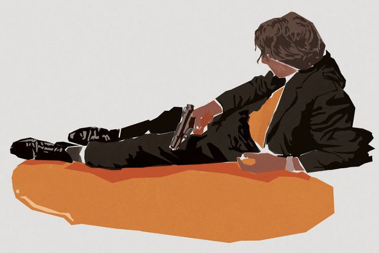

Team Leading
The art of being expendable
Matteo Di Paolantonio 22/11/2021
Agenda
- The teamlead himself / herself
- The teammates
- The project
- The client
THE TEAMLEAD
“ Listen to me, Marvin, I'm a c...
...listen to me, Marvin Nash, I'm a cop. ”
The goal
- Being expendable
- Cohesive and autonomous team
- Having the team spinning forever
A jack of all trades
“ master of none though oftentimes better than master of one ”
- Tech lead
- Architect
- DevOps
- Project manager
- Product owner
- Senior dev
- Mentor
- ...
The unblocker

- Issues
- Doubts
- Fires
- Requirements
- Risks
- Meetings
- Chats
- Pairings
- Deadlines
- ...
clean and tidy house
Calendar and cerimoniesclean and tidy house
Wiki

clean and tidy house
Interfaces and APIs
clean and tidy house
Architecture diagram
clean and tidy house
Boards and tickets
delegating and guarding
“ Concealed within his fortress, the lord of Mordor sees all. ”

team shape matters

Scenarios
- One senior plus
- No seniors and one medior plus
- One team lead (not you)
actions and words matter
- Be an example
- Assertive, transparent and backed by facts communication
Kindly reminder
“ I hate losing more than I even wanna win. ”

THE TEAMMATES

The basics
- Processes
- Agreements
- Expectations
Team Agreements

Team Agreements
Communication
- When a non trivial issue / problem is reported on slack the team is committed to not reply to the client until we research the problem and solution. Our first response will be that we’re going to look for the problem and then, if needed, we’ll create a ticket. Then, we’ll come back to the client when we know what is happening and how we can solve it.
- We should try to reply as much as possible to slack messages using threads in order to reduce noise at a minimum.
- If we need to start a conversation about any concern/question that might be interesting for the team, we’ll always do it in the public channel.
- If we are asked about questions that could be interesting for the team on a private channel, we’ll try to move the conversation to the public channel and remind it is better to speak in the public channel so everybody can be aware of the issue.
Team Agreements
Naming convention
Team Agreements
Code management
Commits
<type>: <subject>
<BLANK LINE>
<body> → optional
<BLANK LINE>
#<ticketID> → optional
Branches
chore: polishing adjustments.
cicd: docker & cicd adjustments.
feat: new capabilities.
fix: bug, hotfix, etc.
refactor: enhancements.
style: changes in styles.
test: test.
docs: docs.
other: whatever.
Pull requests
What’s the focus of this PR
<info>
How to review this PR
<info>
Related work items --> optional
* <info>
* <info>
Before submitting this I made sure:
[] The code builds without any errors
[] I'm using our guidelines
[] I've added tests
Team Agreements
Tasks management
Backlog items
- It is the single source of truth
- It follows the defined template
- It is specific enough for call to action
- It is understood by the team
- It has no blockers
Definition of done
- It’s merged on the main branch
- It is deployed on production
- Meets the acceptance criteria
One on one
First one- How would you like to receive feedback ?
- What do you look for in a manager ?
- How do you see yoursefl in your current role ?
- Where do you get motivation from ?
- Where do you like to do in your spare time ?
One on one
Following ones- Deal with issues, problems, conflicts, etc.
- Give and receive feedback
- Career development and goals follow up
- Team, client, project, role, etc.
Retros
retrotool

Teammates relationships
- Fostering relationships
- Virtual coffees
- Pairing
- Team building events
Team members tasks
slightly over their capabilities
Safety nets
- Testing
- Different environments
- Shit umbrella
Every person is a whole world
- Be kind
- Listen
- Watch out for signs
THE PROJECT
THE CLIENT
Thank you